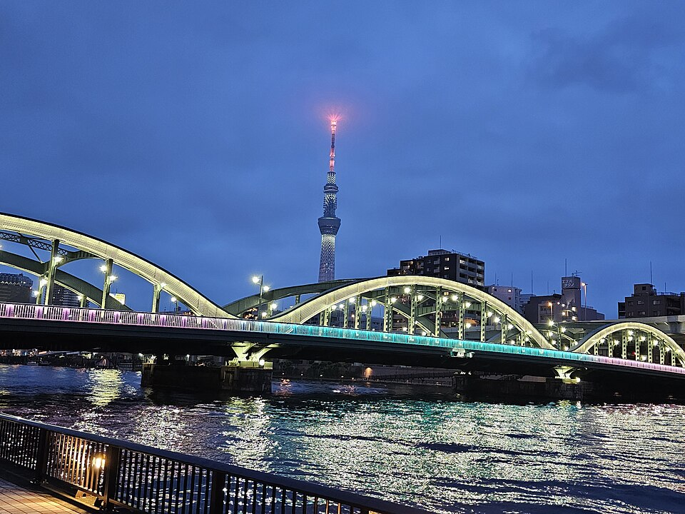

도쿄 전경 · 사진: Renate Hano / Wikimedia Commons, CC BY-SA 4.0
세인트메리 인터내셔널 스쿨(St. Mary's International School) — 편입 학년이 선택지를 정하는 학교
1. 세인트메리 인터내셔널 스쿨은 어떤 학교인가
· 설립 — 1954년, 가톨릭 교육 수도회인 그리스도교교육수사회(Brothers of Christian Instruction)가 세운 것으로 알려져 있습니다.
· 위치 — 도쿄 세타가야구(世田谷区). 주거지역에 있는 통학형 학교로 알려져 있습니다.
· 성격 — 가톨릭 미션스쿨이며 남학교로 알려져 있습니다.
· 학년 — 유치원부터 G12까지 한 학교에서 이어지는 것으로 알려져 있습니다.
· 수업 언어 — 영어입니다.
· 교육과정 — 고등 과정에서 학교 졸업장(High School Diploma)을 기본으로 하고, 그 위에 IB 디플로마와 AP 과목을 선택할 수 있는 구조로 알려져 있습니다.
· 구성 — 여러 국적의 학생이 함께 다니는 다국적 구성으로 알려져 있습니다.
※ 학비·정원·합격률·재학생 수 등 해마다 바뀌는 수치는 이 글에서 다루지 않습니다. 개설 과정과 입학 규정도 학교 방침에 따라 달라질 수 있으니 학교 요강을 직접 확인하세요.
2. 핵심 — "졸업장은 전원, IB는 선택"이라는 구조
도쿄의 다른 학교와 가장 다른 점이 여기입니다. 세이센처럼 고등이 통째로 IB인 학교도 있고, ASIJ처럼 미국식 졸업장에 AP를 얹는 학교도 있습니다. 세인트메리는 그 사이에 있습니다. 모든 학생이 학교 졸업장을 받고, 그 위에 IB 디플로마를 얹을지 말지를 학생이 고른다고 알려져 있습니다.
| 항목 | 세인트메리 | 세이센 | ASIJ |
|---|---|---|---|
| 성별 | 남학교 | 여학교 | 남녀공학 |
| 고등 마무리 | 학교 졸업장 + IB·AP 선택 | IB 디플로마 | 미국식 졸업장 · AP |
| IB 디플로마 | 선택 | 중심 과정 | 해당 없음 |
| 학년 범위 | 유치원~G12 | 유치원~G12 | 유치원~G12 |
※ 각 학교의 개설 과정·학년 범위는 해마다 바뀔 수 있습니다. 지원 전 각 학교 요강을 직접 확인하세요.
이 구조는 양날입니다. 좋은 쪽은, 영어가 아직 올라오는 중인 아이가 IB 디플로마의 부담 없이 졸업할 수 있다는 것입니다. 조심할 쪽은, 선택이니까 아무도 대신 결정해 주지 않는다는 것입니다. "일단 보내 놓으면 알아서 IB를 하겠지" 하고 두면 G11에 가서 선택하지 않은 상태가 되어 있는 경우가 생깁니다. → 국제학교 입학 준비 총정리
3. 한국(주재원) 학생이 겪는 어려움 — 시기가 곧 선택지다
· IB 디플로마는 "늦어도 G11 시작 전"에 등록해야 한다고 알려져 있습니다. 그리고 마지막 2년을 이 학교에서 마쳐야 하는 것으로 알려져 있습니다. 주재 발령이 G11 도중에 나면 이 경로는 사실상 닫힙니다.
· G11 입학자에게는 영어 지원이 없다고 알려져 있습니다. G9·G10 입학자에게도 제한적이라고 안내되어 있습니다. 이 한 줄이 실무에서 가장 무겁습니다. "학교에 가면 영어가 늘겠지"가 고학년 편입에서는 성립하지 않는다는 뜻이기 때문입니다. → EAL(영어 지원 프로그램) 완전정리
· AP와 IB를 같은 저울에 올리게 된다. 둘 다 열려 있다는 건 편하지만, 한국 가정에서는 "둘 다 조금씩" 담다가 어느 쪽도 깊지 않은 성적표가 나오기도 합니다. → AP 과목 선택 가이드 · IB DP 점수 완전정복
· 영어로 된 수학. 계산은 되는데 알지브라 용어가 영어이고, 서술형에서 풀이 과정을 영어 문장으로 적어야 단계 점수를 받습니다.
· 일본에 살지만 일본 입시와 무관하다. 이 학교의 진학 준비는 EJU·일본 대학 입시와는 다른 길입니다. 일본 대학도 함께 보실 계획이면 별도로 준비해야 합니다. → 일본 JLPT·EJU 안내
· 남학교 환경. 좋고 나쁨이 아니라 아이 성향의 문제입니다. 다만 편입 시기가 늦을수록 이미 형성된 관계에 들어가는 부담이 있다는 점은 감안하시는 편이 좋습니다.
4. 그래서 이렇게 준비합니다
🗺️ 먼저 — 발령 시기를 표로 그려 본다
세인트메리는 이 순서가 반대가 되면 안 되는 학교입니다. 학교를 정하고 준비를 시작하는 게 아니라, 아이가 몇 학년에 들어가는지를 먼저 확정하고 거기서 IB를 목표로 할지 말지를 정해야 합니다.
· 유치원~G5 편입 — 가장 여유 있습니다. 읽기 레벨과 말하기를 올리는 기간으로 쓰세요.
· G6~G8 편입 — 학습 영어를 만드는 마지막 편한 구간입니다. 여기서 만들어 두면 G11의 선택이 넓어집니다.
· G9~G10 편입 — 분기점입니다. 영어 지원이 제한적이라고 알려져 있으므로, IB 디플로마를 염두에 두신다면 이 2년 안에 학교 밖에서 영어를 끌어올려야 합니다.
· G11 이후 편입 — IB 디플로마는 현실적으로 접고, 학교 졸업장 + AP 과목으로 내신을 안정시키는 쪽이 대체로 합리적입니다. 무리해서 둘 다 잡으면 둘 다 흔들립니다.
📖 영어과외 — 회화가 아니라 "학습 영어"
고학년 편입에서 문제가 되는 건 말이 트이느냐가 아니라 교과서를 읽고 에세이를 쓰는 영어입니다. 주장 → 근거 → 분석의 뼈대를 세우고, 과목별 지시어(analyze·evaluate·justify)가 각각 무엇을 요구하는지부터 정리합니다. (영어 공부법 참고)
📐 수학과외 — 영어 용어와 "show your work"
알지브라·지오메트리 개념을 한국식 풀이와 영어 용어로 연결하고, 풀이를 영어 문장으로 적는 습관을 들입니다. 이 습관은 IB를 하든 AP를 하든 똑같이 쓰입니다. (알지브라 공부법 참고)
🧭 G10 안에 정할 것
IB로 갈지 AP로 갈지, 간다면 어떤 과목 조합인지를 G10 안에 문서로 정리해 두세요. 이 결정을 미루면 G11에 학교 상담 일정에 쫓겨서 정하게 되고, 그때는 되돌리기 어렵습니다. (성적표 읽는 법 참고)
5. 도쿄의 강점 — 시차 없는 화상과외
일본은 한국과 시차가 없습니다. 도쿄 오후 5시가 한국 오후 5시라, 방과 후 시간이 그대로 한국 강사진의 수업 시간과 맞습니다. 도쿄의 한국계 학원은 대부분 일본 대학 입시나 회화 중심이라, 영어로 된 수학 서술과 영어 에세이 구조를 한국어로 짚어 줄 곳을 찾기가 쉽지 않습니다. 아이의 실제 과제와 채점표를 화면에 놓고 "어느 항목에서 깎였는지"부터 보는 방식이 가장 빠릅니다. 도쿄 지역 사정은 도쿄 국제학교 수학·영어 과외에 정리해 두었습니다.
정리
세인트메리 인터내셔널 스쿨은 1954년 설립으로 알려진 도쿄 세타가야의 가톨릭 남학교이고, 고등 과정은 학교 졸업장 위에 IB 디플로마와 AP를 선택으로 얹는 구조로 알려져 있습니다. 이 학교를 볼 때 기준은 명성이 아니라 시기입니다. ① IB 디플로마는 G11 시작 전 등록·마지막 2년 재학이 조건으로 알려져 있고, ② G11 입학자에게는 영어 지원이 없다고 안내되어 있습니다. 그러니 발령 시기가 정해지는 순간 준비의 방향도 정해집니다. 30분 무료 상담으로 우리 아이가 어느 구간에 있는지부터 함께 짚어 보세요.